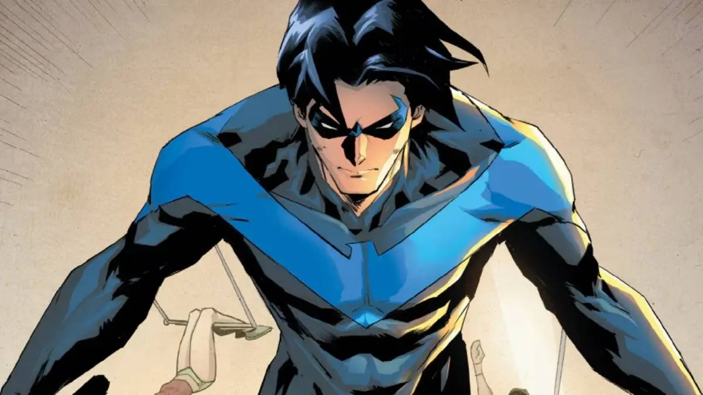

Dick Grayson was born into a family of acrobats known as the Flying Graysons,
a star attraction of Haly’s Circus. From a young age, he trained in high‑level
acrobatics, balance, and aerial stunts, performing alongside his parents in
sold‑out shows across the country. His childhood was filled with travel,
discipline, and a deep love for performing.
Everything changed when a mob boss named Tony Zucco sabotaged the trapeze
equipment as part of an extortion scheme. Dick witnessed the tragic fall that
killed his parents, leaving him orphaned and devastated. This moment became the
turning point that shaped the rest of his life.
Becoming Robin
Bruce Wayne, who had also lost his parents to violence, recognized the pain
Dick was going through and took him in as his ward. Over time, Bruce revealed
his identity as Batman and offered Dick the chance to fight crime by his side.
Dick accepted, becoming the first Robin aka the Boy Wonder.
As Robin, Dick brought energy, optimism, and acrobatic skill to Batman’s
mission. He fought villains across Gotham, trained in detective work, and
became a founding member of the Teen Titans, where he learned leadership and
teamwork.
Growing Beyond the Robin Identity
As Dick grew older, he began to feel the limitations of being Batman’s
sidekick. He wanted to be more than a partner. He wanted to be his own hero.
After disagreements with Batman and a desire for independence, Dick stepped
away from the Robin mantle.
During this time, he struggled with finding his place in the world. He
questioned who he was without Batman and what kind of hero he wanted to become.
This period of self‑discovery eventually led him to create a new identity.

Becoming Nightwing
Inspired by a Kryptonian legend told to him by Superman, Dick chose the name
Nightwing, a symbol of forging your own path while still honoring where you
came from. As Nightwing, he moved to the city of Blüdhaven, a place even more
corrupt than Gotham, and dedicated himself to protecting it.
Nightwing is known for his agility, acrobatics, escrima sticks, and strong
moral compass. Unlike Batman, he leads with compassion and empathy, earning the
trust of both heroes and civilians. His journey from orphan to sidekick to
independent hero is one of the most iconic character evolutions in DC Comics.
Random Nightwing Fact
Click the button to learn something new about Nightwing!